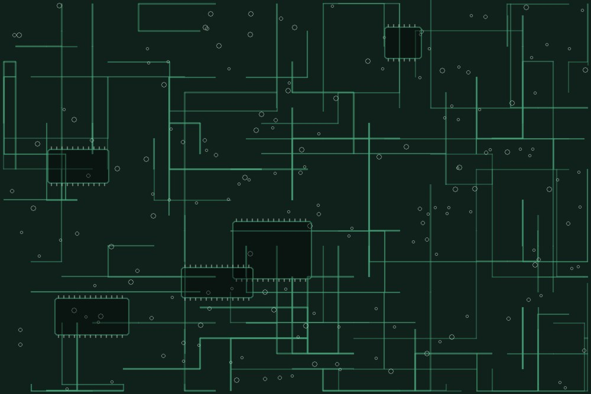
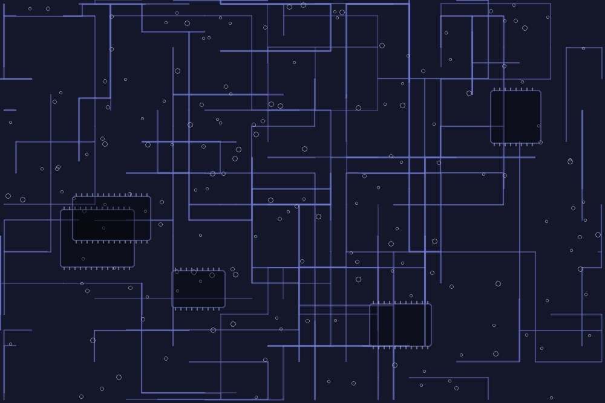
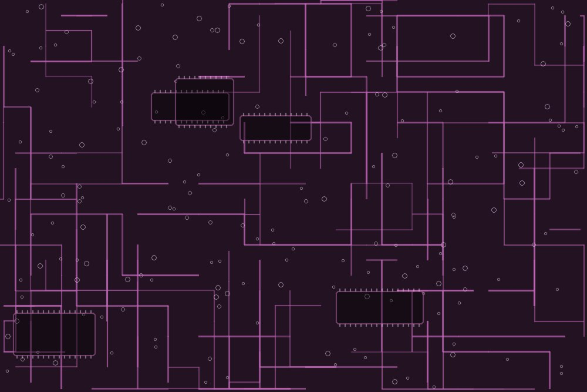

Wearable sensing & human activity recognition
Wearable sensing and human activity recognition for healthcare, rehabilitation, and personalized monitoring.

Sleep Position Tracking
Sleep is crucial for physical and mental recovery, and sleep positions significantly affect sleep quality. We propose a wearable system with two wristbands and a chest-band that tracks sleep positions, using a two-level classifier within a Dynamic State Transition framework to classify twelve motions across four sleep positions.
S. Jeon, T. Park, A. Paul, Y.-S. Lee and S. H. Son. IEEE Access, vol. 7, pp. 135742–135756, 2019. DOI

In-sleep Stroke Early Detection
A wearable system that detects strokes during sleep by analyzing asymmetrical motion with two wristbands. The EDIS framework leverages deep learning and CNNs for efficient, accurate detection, aiming to expedite detection and reduce time to treatment.
S. Jeon, Y.-S. Lee and S. H. Son. IEEE Access, vol. 11, pp. 84944–84956, 2023. DOI
Real-time processing & hardware–software integration
Real-time processing, intelligent sensing, and hardware–software integration for reliable embedded and edge systems.

Automatic Shock Treatment
An IoT-based framework that continuously monitors vital hemodynamic data, automatically detects shock states, and administers necessary medication, while allowing clinicians to track patient progress through a web application.
N. Lee, Y. Kim, M. Jeong, J. Shin, I. Joe, S. Jeon and B. S. Ko. KSII TIIS, vol. 16, no. 7, pp. 2209–2224, 2022. DOI

Remote Monitoring with a Mobile Robot (ROMI)
ROMI enables non-contact monitoring of ICU patients using real-time optical digit recognition to read medical device screens. Built with MATLAB Simulink on NVIDIA Jetson hardware, it showed high accuracy across ten pre-trained CNN models.
S. Jeon, B. S. Ko and S. H. Son. Sensors, 23(2), 638, 2023. DOI
Security and trust for connected systems
Security and trust for critical infrastructure, embedded systems, supply chains, and AI-generated content.

Nuclear Security
We study cyber-security for safety-critical nuclear systems — from graded approaches to cybersecurity visibility regulation, to security acceptance criteria for programmable logic devices such as FPGAs in new reactors. The work also covers behaviour-based cybersecurity training and simulated environments for operator readiness.

xBOM — SBOM and HBOM
Supply-chain security through bills of materials. On the software side we predict vulnerabilities from SBOM metadata using machine learning; on the hardware side we build HBOM with PUF-based device authentication and tamper detection, so that components in an IoT or embedded system can be identified and trusted end to end.

Deepfake Detection
Detecting AI-generated media under real-world conditions. We compare spatial and temporal approaches for video deepfakes under platform-specific distortions, and analyse noise robustness of wav2vec2-based models for voice deepfakes — aiming for detectors that survive compression, re-encoding, and noisy channels.